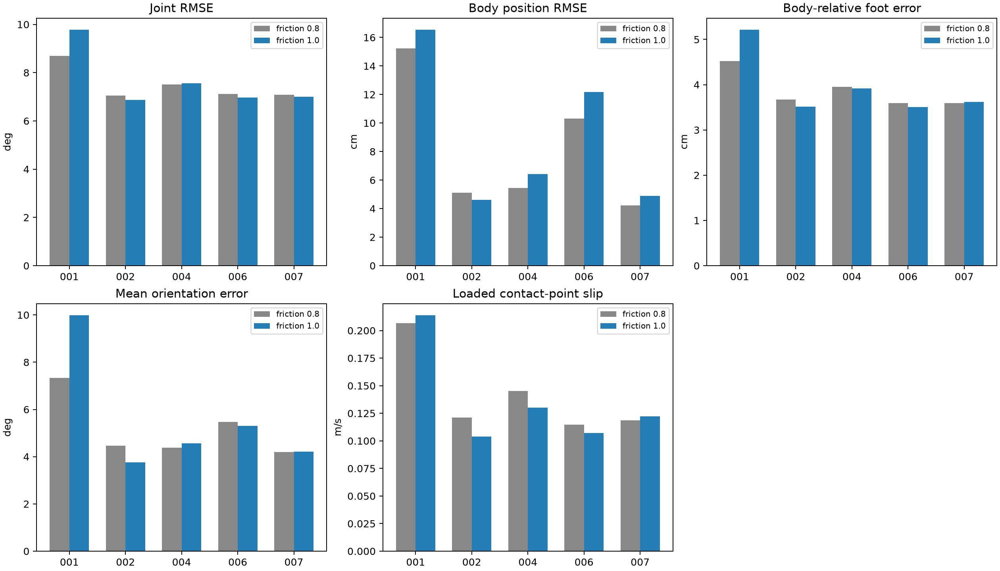

2026년 10월 29일 · 같은 PPO 체크포인트 · MJX · 미끄럼 마찰계수 0.8 → 1.0
마찰을 A1의 MJX 기준값에 맞추는 것만으로 현재 PPO의 전체 추종 성능은 개선되지 않았다. 평균 접지 미끄러짐은 약 4.2% 감소했지만, 몸통 위치 오차는 약 10.6% 증가했고 관절·발·자세 오차도 평균적으로 증가했다. 모두 10초 생존했으나 오차 선별은 0/5로 유지됐다. 이는 마찰을 키우는 것 자체가 항상 나쁘다는 뜻이 아니라, 기존 정책을 그대로 둔 이번 비교의 결과다.
A1의 MJX 기준 환경과 동일한 미끄럼 마찰계수를 적용하면 TT의 추종 오차와 접지 미끄러짐이 줄어드는지 확인했다. 5,246,976 스텝 학습한 기존 정책을 그대로 사용했고 재학습하지 않았다. 비교 대상은 이전 CPU 평가가 아니라 같은 MJX의 마찰 0.8 평가다.
바꾼 것은 네 발과 바닥의 미끄럼 마찰계수뿐이다. 비틀림·굴림 마찰, 다른 부품의 마찰, 형상·질량·관절 범위, KP 30·KD 0.5, 토크 한계 33.5N·m, 자기 충돌 끔·바닥 충돌 유지, 30Hz 제어·300Hz 물리 계산, 초기 자세·속도, 관측 잡음과 seed 0은 유지했다. 동일한 5개 레퍼런스를 첫 프레임부터 최대 10초 실행했다.
10초 생존: 기존 5/5 → 변경 5/5. 생존과 세 오차 기준을 모두 만족한 모션: 기존 0/5 → 변경 0/5.
| 모션별 지표의 평균 | 마찰 0.8 | 마찰 1.0 | 변화율(음수=감소) |
|---|---|---|---|
| 관절 RMSE | 7.495 ° | 7.634 ° | +1.9% |
| 몸통 위치 RMSE | 8.068 cm | 8.924 cm | +10.6% |
| 몸체 기준 발 평균 오차 | 3.867 cm | 3.954 cm | +2.2% |
| 자세 평균 오차 | 5.166 ° | 5.564 ° | +7.7% |
| 접지 미끄러짐 | 0.141 m/s | 0.135 m/s | -4.2% |
위 값은 각 모션의 지표를 같은 비중으로 평균했다. 관절 오차가 줄어든 모션은 3/5, 위치 오차는 1/5, 미끄러짐은 3/5다. 평균 변화와 모션별 변화를 함께 봐야 한다.

| 모션 | 마찰 | 시간(s) | 생존 | 관절 RMSE(°) | 몸통 위치 RMSE(cm) | 몸체 기준 발 오차(cm) | 자세 오차(°) | 접지 미끄러짐(m/s) |
|---|---|---|---|---|---|---|---|---|
| calm_random_001 | 0.8 | 10.00 | 완주 | 8.70 | 15.23 | 4.52 | 7.33 | 0.207 |
| calm_random_001 | 1.0 | 10.00 | 완주 | 9.78 | 16.53 | 5.21 | 9.98 | 0.214 |
| calm_random_002 | 0.8 | 10.00 | 완주 | 7.06 | 5.11 | 3.68 | 4.46 | 0.121 |
| calm_random_002 | 1.0 | 10.00 | 완주 | 6.86 | 4.61 | 3.51 | 3.76 | 0.104 |
| calm_random_004 | 0.8 | 10.00 | 완주 | 7.51 | 5.45 | 3.95 | 4.38 | 0.145 |
| calm_random_004 | 1.0 | 10.00 | 완주 | 7.57 | 6.43 | 3.92 | 4.57 | 0.130 |
| calm_random_006 | 0.8 | 10.00 | 완주 | 7.12 | 10.33 | 3.59 | 5.47 | 0.115 |
| calm_random_006 | 1.0 | 10.00 | 완주 | 6.96 | 12.17 | 3.51 | 5.30 | 0.107 |
| calm_random_007 | 0.8 | 10.00 | 완주 | 7.08 | 4.22 | 3.59 | 4.19 | 0.119 |
| calm_random_007 | 1.0 | 10.00 | 완주 | 7.00 | 4.88 | 3.62 | 4.21 | 0.122 |
전도는 몸통 위쪽 축의 수직 성분 0.5 미만이다. 오차 선별은 생존·관절 RMSE 5° 미만·몸체 기준 발 평균 오차 3cm 미만·자세 평균 오차 5° 미만을 모두 요구한다. 미끄러짐은 실제 MJX 접촉 힘이 0.001N 이상인 발–바닥 접촉점의 수평 속도이며 합격 기준은 정하지 않았다.
이 비교는 마찰 0.8에서 학습한 고정 정책의 마찰 민감도를 보는 실험이다. 마찰 변경만으로 동작이 개선되는지 확인할 수 있지만, 마찰 1.0에서 새로 학습했을 때의 최종 성능은 알 수 없다. 마찰을 키워도 제어 행동과 접촉 타이밍이 함께 바뀌므로 모든 모션에서 오차나 미끄러짐이 반드시 줄지는 않는다. 한 seed·학습에 사용한 5개 모션의 결과이며 실제 하드웨어나 다른 형상으로 일반화하지 않는다.
주황 A1 전체 외형, 보라 TT 목표, 파랑 해당 마찰 조건의 MJX 실제 기록을 공통 바닥에서 재생한다. 가려짐 방지를 위한 일정한 표시 간격만 두었다. 모든 영상 주소는 file:/// 절대 경로다.
기존 마찰 0.8
변경 마찰 1.0
기존 마찰 0.8
변경 마찰 1.0
기존 마찰 0.8
변경 마찰 1.0
기존 마찰 0.8
변경 마찰 1.0
기존 마찰 0.8
변경 마찰 1.0
전체 비교 수치 · 마찰 1.0 측정값 · 실험 조건 · 이전 실험 보고서